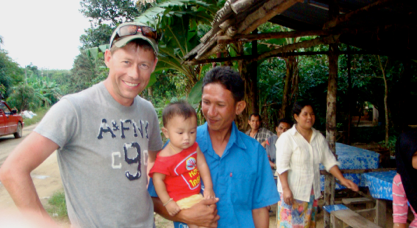
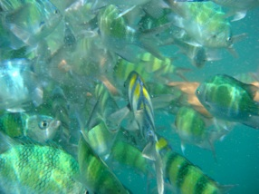
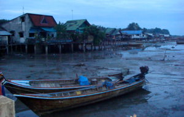
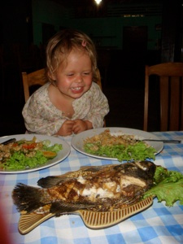

Island hopping i Den Thailandske skærgaard

Fra Koh Mook til Koh Libong
lørdag den 10. november 2007

Vi har forladt Koh Mook og Emeralds Cave og er for alvor på vej ud i det thailandske øhav.

Herefter sejler vi videre til frokost på øen Koh Hai, hvor vi også møder et par danske familier.
Bagefter sejler vi videre til nationalparken Koh Kradang, hvor vi hopper i vandet og oplever en skøn gang snorkling, omgivet af masser af thaier i selvlysende veste. her får Viola for første gang rigtig prøvet at snorkle omgivet af farverige nysgerrige fisk, masser af søpindsvin og smukke koraller.
Efter snorkling skal vi skynde os til overnatningsstedet Koh Libong,den største ø i området omkring Trang. Pga tidevandet skal vi nå ind gennem en smal passage til “spøgelsesresortet”. Her er sæsonen slet ikke startet. Vi er kun 3 små grupper gæster, og vi får en noget sølle bungalow uden vand, der ikke er gjort rent siden sidste sæson. Der er kun strøm mellem kl. 17 og 24, så det kan godt blive en varm nat... Nå, men Tim får skaffet et par moskitonet til natten, og vi kører med pickup truck en tur til byen, for det viser sig at vores guide Tom har sin kone og lille dreng på 5 måneder her på øen. Meget af turen foregår på en grussti med store regnhuller. Børnene får set en masse dyr på vejen. Det er virkelig en kontrasternes dag. Vi møder Toms kone og familie og hans barn, som han ser ca. en gang om måneden. Den resterende tid bor han på en anden ø, hvor han fisker og guider turister. Fiskeriet foregår efter månens kalender, der har stor indflydelse på tidevandet. Vi går en tur i byen, hvor alle bor i små et værelses huse med åbent bad og ildsted. Vejene er små mudrede stier, og vi er tydeligvis de eneste turister. 95 procent af befolkningen her er muslimer, så vi kan godt forvente at blive vækket til morgenbøn kl. 5. I

byen møder der os et noget pudsigt syn, alle fiskerbådene ligger til kaj på jorden ! Der er så stor forskel på flod og ebbe, at de kun kan sejle ud ved højvande.

Natten bliver varm med masser af mystiske lyde, og brok fra Stella, der ikke vil sove under net. Vi vågner tidligt med et sæt, til nogle meget mærkelige skrig. Formentlig en høne, der har forvildet sig ind under vores hus. Gulvet består ef helt tynde brædder med store revner imellem, så det lyder fuldstændig som om at lyden kommer inde fra vores hytte. Resten af morgenen bliver dog dejlig fredfyldt med egern, fuglekvidder og hygge i vandkanten.
På besøg i en lille fiskerlandsby på Koh Libong. Vores guide Tom ser sin lille søn for første gang i lang tid og vi får friturestegte bananer i vejkanten.